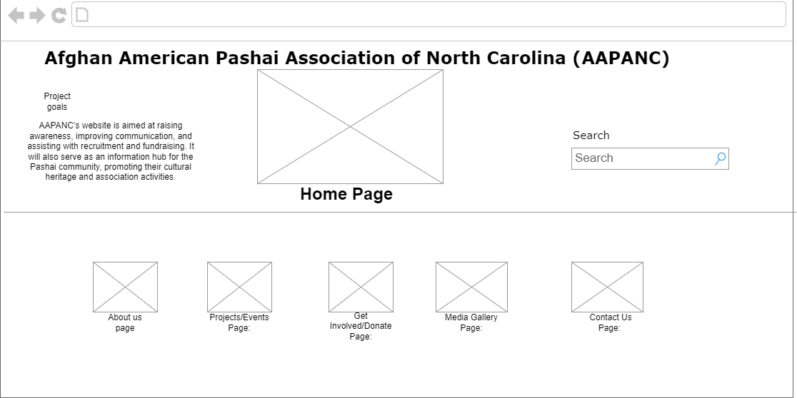

Project Overview
Afghan American Pashai Association of North Carolina (AAPANC)
AAPANC’s website is aimed at raising awareness, improving communication, and assisting with recruitment and fundraising. It will also serve as an information hub for the Pashai community, promoting their cultural heritage and association activities.
Client Information
Name: Nawedullah Akbari
Organization: Afghan American Pashai Association of North Carolina, Inc.
Email: [Private]
Phone: [Private]
Wireframe/Site Map
Page Designs
- Home Page:
- Name:Home Page
- Purpose:Overview of AAPANC’s mission and vision. Includes a welcome message from the association's leaders.
- Audience:Pashai Community
- Content:Overview of AAPANC’s mission and vision, featuring announcements, upcoming events, and newsletters.
- About Us Page:
- Name:Home Page
- Purpose:Provide background information on AAPANC.
- Audience:Supporters, potential partners, and Pashai community members.
- Content:Overview of AAPANC’s mission to preserve and promote Pashai culture. Introduction to board members or key figures in the organization.
- Projects/Events Page:
- Name:Projects & Events Page
- Purpose:Highlight ongoing and past initiatives as well as upcoming events.
- Audience:Volunteers, donors, and community members.
- Content:Projects: Sections for community development, cultural preservation, and educational initiatives.Events Calendar: Display of upcoming events such as cultural festivals, fundraisers, and community gatherings.
- Get Involved/Donate Page:
- Name:Get Involved/Donate Page
- Purpose:Provide information on how individuals can contribute through volunteering or donations.
- Audience:Potential volunteers, donors, and partners.
- Content:Information on contributing to the organization via volunteering or partnerships. Donation Form: Interactive form to collect donation information (amount, recurring donations), with input validation to ensure accuracy
- Media Gallery Page:
- Name:Media Gallery Page
- Purpose:Showcase images and highlights from AAPANC’s events and activities.
- Audience:General public, community members, and media.
- Content:An interactive photo gallery featuring community events, cultural celebrations, and the impact of AAPANC’s work.
- Contact Us Page:
- Name:Contact Us Page
- Purpose:Provide information on how to contact AAPANC.
- Audience: Individuals interested in more information, volunteering, or event participation.
- Content:Contact form for inquiries about events, volunteering, or general information.Embedded Google Map showing the organization’s location. Contact details include email, phone number, and address.
Dynamic Functionality
- Use JavaScript/jQuery to implement dynamic functionality, such as:
- Interactive event calendar or image galleries.
- Form validation on the contact and donation forms.
- jQuery-UI widgets for filtering events or galleries.